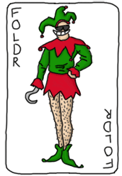

高阶函数
让我们函数化

把你自定义的函数作为参数传递给另一个函数的能力， 是所有的函数式编程语言的一个重要组成部分。 也就是说，作为参数的函数和其它的参数是一样的。 一个函数可以通过高阶函数这个方式将另一个函数作为参数。 高阶函数对熟悉Erlang的人来说是非常好的用的抽象工具和最好用的工具。
再一次，这也是一个植根于数学的概念，主要是 lambda演算。 我不会介绍lambda演算非常多的细节，因为很多然需要花费很多时间理解它并且它有点超出本章的范围。 尽管如此，我会简单的定义它：一个系统中所有的东西都是函数，即便是数字。 因为所有东西都是函数，函数必须接受另一个函数作为参数并且可以用更多函数操作这个参数！
好了，这听起来有点奇怪，所以让我们用一个例子来展示它们：
-module(hhfuns). -compile(export_all). one() -> 1. two() -> 2. add(X,Y) -> X() + Y().
现在打开Erlang的shell，编译这个模块并进行一些尝试：
1> c(hhfuns).
{ok, hhfuns}
2> hhfuns:add(one,two).
** exception error: bad function one
in function hhfuns:add/2
3> hhfuns:add(1,2).
** exception error: bad function 1
in function hhfuns:add/2
4> hhfuns:add(fun hhfuns:one/0, fun hhfuns:two/0).
3
感到迷惑？并非如此，一旦你知道在第二个命令中这是怎么工作的（难道不是显而易见的吗？），你就不会迷惑。
在第二个命令中原子one和two被传入到add/2中，
然后在第三个命令中将两个原子当作函数的名字(X() + Y())。
如果不使用参数列表来写函数，那么这些原子将被认为是原子，但是原子不能认为是函数，所以调用会失败。
这就是为什么第三个表达式也会失败：因为值1和2也不能被当作函数调用，并且我们只需要函数做参数！
这是一个新的语法，为了让你把模块外的函数传入进去。它是这样写的fun Module:Function/Arity：
这个语法告诉VM，使用那个特殊的函数并将它绑定到一个变量上。
那么我们这样使用函数能获得什么好处呢？
让我展示下面的小例子，这也许回让你明白它的好处。
我们将向hhfuns文件中
添加一些新的函数，这些函数递归整个列表，并将整个列表中的整数加1或减1：
increment([]) -> []; increment([H|T]) -> [H+1|increment(T)]. decrement([]) -> []; decrement([H|T]) -> [H-1|decrement(T)].
我们可以看出这些函数是多么的相似？它们都做了相同的事情：
遍历整个列表，在每个元素上执行相同的函数（+或-），然后再次调用自己。
代码中基本上没什么变化：只是被执行的函数和递归调用有些不同。但是做为核心的链表上的递归调用都是相同的。
我将抽象这些相同的部分到一个函数（map/2）中，它将接受另一个函数作为参数：
map(_, []) -> []; map(F, [H|T]) -> [F(H)|map(F,T)]. incr(X) -> X + 1. decr(X) -> X - 1.
我们可以在shell中进行一些测试：
1> c(hhfuns).
{ok, hhfuns}
2> L = [1,2,3,4,5].
[1,2,3,4,5]
3> hhfuns:increment(L).
[2,3,4,5,6]
4> hhfuns:decrement(L).
[0,1,2,3,4]
5> hhfuns:map(fun hhfuns:incr/1, L).
[2,3,4,5,6]
6> hhfuns:map(fun hhfuns:decr/1, L).
[0,1,2,3,4]
我们可以看出结果是相同的，但是我们创建了一个更好的抽象！
每次我们想在列表上的每个元素上执行一个函数的时候，我们只需要调用 map/2，并将要执行的函数作为参数传入。
但是，有一点烦人的地方，我们每次都需要将放在map/2中作为参数的函数放到一个模块中，对它进行命名和导出，
最后还要编译等。这显然不现实，我们需要动态的声明这些函数。。。
匿名函数
匿名函数，或funs，是用来解决让我们声明特殊的内连函数而不想去命名这个函数的这个问题。 它们可以完成很多普通函数能完成的事情，但是它们不能递归调用自己（因为为没有名字，它们怎么知道怎么调用自己呢？） 它们的语法如下：
fun(Args1) ->
Expression1, Exp2, ..., ExpN;
(Args2) ->
Expression1, Exp2, ..., ExpN;
(Args3) ->
Expression1, Exp2, ..., ExpN
end
并且我们像下面的例子使用：
7> Fn = fun() -> a end. #Fun<erl_eval.20.67289768> 8> Fn(). a 9> hhfuns:map(fun(X) -> X + 1 end, L). [2,3,4,5,6] 10> hhfuns:map(fun(X) -> X - 1 end, L). [0,1,2,3,4]
并且，现在你看到了一个让所有人都喜欢函数式编程的原因： 抽象所有低级别的代码的能力。基本的概念，如循环都可以被忽略，让你专注于你所要做的事情，而不是你要怎么做它。
匿名函数已经可以非常完美的完成这样的抽象了，但是它们还有很多隐藏的能力等待我们发掘：
11> PrepareAlarm = fun(Room) ->
11> io:format("Alarm set in ~s.~n",[Room]),
11> fun() -> io:format("Alarm tripped in ~s! Call Batman!~n",[Room]) end
11> end.
#Fun<erl_eval.20.67289768>
12> AlarmReady = PrepareAlarm("bathroom").
Alarm set in bathroom.
#Fun<erl_eval.6.13229925>
13> AlarmReady().
Alarm tripped in bathroom! Call Batman!
ok
请接电话蝙蝠侠！这里发生了什么？首先，我们先声明了一个匿名函数，并将它赋值给PrepareAlarm。
但是这个函数还没有触发：只有在执行PrepareAlarm("bathroom").的时候，它才被真正的调用了。
 此时，它会调用
此时，它会调用io:format/2来输出"Alarm set"。
并且使用第二个表达式（另一个匿名函数）作为返回值，返回给调用者，调用者将这个匿名函数赋值给AlarmReady。
不过请注意，在这个函数中，变量Room的值是从它的‘父’函数(PrepareAlarm)进行绑定。
和这个相关的概念叫做闭包。
为了理解闭包，首先就需要理解作用域。
函数作用域可以被想象为一个存放所有变量和它们值的地方。
在函数base(A) -> B = A + 1.中A和B
都是被定义在base/1的作用域中。这代表着在base/1函数中任何东西都可以引用
A和B并且得到相应值。并且当我说‘任何地方’，我并不是在开玩笑，亲；这同样包含匿名函数：
base(A) ->
B = A + 1,
F = fun() -> A * B end,
F().
B和A始终被绑定在base/1函数作用域中，
所以函数F能访问它们。这是因为函数F继承了base/1的作用域。
像所有真是世界中的继承一样，父函数无法使用子函数作用域内的变量：
base(A) ->
B = A + 1,
F = fun() -> C = A * B end,
F(),
C.
在这个版本的函数中，B还是等于A + 1并且F还是能执行的非常好。
但是，变量C只包含在匿名函数F的作用域当中。
当函数base/1在最后一行，想去访问C的值的时候，它只能得到一个非绑定的变量。
事实上，当你编译这个函数的时候，编译器就会丢出一个异常给你。所以继承是单向的。
这个是非常重要的，我们需要记住匿名函数继承的作用域，不管这个匿名函数是在内部使用，还是把它传入到另一个函数中：
a() ->
Secret = "pony",
fun() -> Secret end.
b(F) ->
"a/0's password is "++F().
好了，当我们编译它们的时候：
14> c(hhfuns).
{ok, hhfuns}
15> hhfuns:b(hhfuns:a()).
"a/0's password is pony"
是谁泄漏了a/0中的密码呢？当然是a/0自己。
因为匿名函数在a/0中被声明，所以匿名函数可以访问a/0的作用域，
所以它在b/1中实行的时候，就像前面所有的那样，匿名函数依然可以访问的到a/0中的变量。
这是非常有用的，它可以让我们将变量和内容带离原来的上下文，此后就不再需要上下文本身了（这个我们先前的蝙蝠侠的例子一样）。
当你有一个函数需要很多参数，但是其中有一个是常量， 你也许喜欢使用匿名函数来携带这些变量以及上下文：
16> math:pow(5,2). 25.0 17> Base = 2. 2 18> PowerOfTwo = fun(X) -> math:pow(Base,X) end. #Fun<erl_eval.6.13229925> 17> hhfuns:map(PowerOfTwo, [1,2,3,4]). [2.0,4.0,8.0,16.0]
通过将调用math:pow/2函数和变量Base绑定且封装在一个匿名函数中，
我们将PowerOfTwo传入hhfuns:map/2进行多次的固定指数的函数调用变成了可能。
有些秘密被隐藏起来了，只有那些阅读了本指南的html文件的人才会发现！（原作者在html中隐藏了一段，我将它一同翻译出来。）
事实上，独自使用［闭包］原则就足可以让你实现基本的类和实现简单的面向对象及继承方式的编程。 让我使用oop.erl 模块，并且重用下‘狗是一个动物的’例子：
-module(oop).
-export([animal/1, dog/1, cat/1]).
%% all the method calls need to be in tuples when they have more than
%% one argument so we can use functions of arity 1 for every call we make.
animal(Name) ->
fun(type) -> "living thing";
(name) -> Name;
(move) -> Name++" moves around...";
({eat, Item}) -> Name++" eats "++Item;
(_) -> "I'm sorry Dave, I can't do that."
end.
dog(Name) ->
Parent = animal(Name),
fun(talk) -> Name++" says: Woof!";
({chase, Animal}) when is_function(Animal) ->
Name++" chases a "++Animal(type)++" named "++Animal(name)++" around";
(X) -> Parent(X)
end.
cat(Name) ->
Parent = animal(Name),
fun(type) -> "cat";
(talk) -> Name++" says: Meow!";
(X) -> Parent(X)
end.
并且我们这样使用它：
16> c(oop).
{ok, oop}
17> Bird = oop:animal("Bird").
#Fun<oop.0.88943279>
18> Bird(type).
"living thing"
19> Bird({eat, worm}).
"Bird eats worm"
20> Dog = oop:dog("Raptor-Dog").
#Fun<oop.1.133772145>
21> Dog(talk).
"Raptor-Dog says: Woof!"
22> Dog(name).
"Raptor-Dog"
23> Cat = oop:cat("Sgt. McMittens").
#Fun<oop.2.66956814>
24> Cat(type).
"cat"
25> Dog({chase, Cat}).
"Raptor-Dog chases a cat named Sgt. McMittens around"
26> Cat({play, "yarn"}).
"I'm sorry Dave, I can't do that."

好了，当我们和真正的OOP类型的语言相比，这不会让我们感到印象深刻，但是我们依然完成了类继承、 方法重载和构建函数（虽然看起来有点奇怪）。 当然，我们从这里学到的最重要的一课是，闭包可以将上下文从一个函数传递到另一个函数中。 注意了，你不应当这样编写任何Erlang的代码，因为没人愿意这么做。 这里面仅仅是一个例子，用来展示闭包的能力，不要太当真。如果你很想在Erts平台上使用OOP那么请使用Elixir， Elixir是一个Erts平台上和Ruby／Scala语法非常类似的语言。
当你编写匿名函数的时候，这里还剩一个你也许会陷入的陷阱，就是你重新定义了作用域：
base() ->
A = 1,
(fun() -> A = 2 end)().
这将声明一个匿名函数并执行它。
因为匿名函数继承了base/0的作用域，
当我们使用=操作符号去比较变量A（绑定到1上）和2的时候，这一定会失败。
然后，这里面可以重新定义变量的，如果我们在内嵌函数头中声明相同的变量，我们就可以重新定义它：
base() ->
A = 1,
(fun(A) -> A = 2 end)(2).
你看到它可以正常的工作。如果你尝试编译这段代码，你会等到一个关于覆盖的警告("Warning: variable 'A' shadowed in 'fun'")。 覆盖是一个用来描述一个重定义了一个和父作用域同名的新变量。 这个提示就是为了防止出现一些错误（通常是正确的行为），但是你会依然希望编译器提示你覆盖了一个变量这种情况。
更新：
从R17这个版本开始，Erlang开始支持匿名函数的命名。
是的，就是你所想的命名的匿名函数。（译者在这里想说，闭包本身就不一定是匿名的，
Erlang在此处完善了自身的闭包实现，这样就可以解决匿名函数无法进行尾递归的问题。）
这个技巧是这样的，名字只能在匿名函数的作用域内使用，不能在匿名函数的作用域外使用。 这样做带来的好处就是，我们可以定义匿名的递归函数。 例如，我们可以定一个匿名函数，一直呼叫蝙蝠侠：
18> f(PrepareAlarm), f(AlarmReady).
ok
19> PrepareAlarm = fun(Room) ->
19> io:format("Alarm set in ~s.~n",[Room]),
19> fun Loop() ->
19> io:format("Alarm tripped in ~s! Call Batman!~n",[Room]),
19> timer:sleep(500),
19> Loop()
19> end
19> end.
#Fun<erl_eval.6.71889879>
20> AlarmReady = PrepareAlarm("bathroom").
Alarm set in bathroom.
#Fun<erl_eval.44.71889879>
21> AlarmReady().
Alarm tripped in bathroom! Call Batman!
Alarm tripped in bathroom! Call Batman!
Alarm tripped in bathroom! Call Batman!
...
变量Loop指向匿名函数自身并且在匿名函数作用域内有效，这个和我们使用相似的变量指向这个匿名函数的时候的效果是一样的。 这将会使我们在Shell中的操作不那么痛苦了。
就像我之前那章结尾保证的一样，我们了解了很多关于匿名函数的理论， 并且探索了更多常见的抽象概念，从而让我们避免编写很多递归函数。

Maps，filters，folds和其它
在本章开始的时候，
我简单的展示了如何使用抽象的方式创建了两个和map/2相似的函数。
我也非常肯定的说这类函数可以用在我们想对每个元素进行操作的任意列表上。
我们可以这样定义这种函数：
map(_, []) -> []; map(F, [H|T]) -> [F(H)|map(F,T)].
然而，这里有非常多的类似的抽象函数去替代常见的递归函数。 让我们先来看看下面这个两个函数吧：
%% only keep even numbers
even(L) -> lists:reverse(even(L,[])).
even([], Acc) -> Acc;
even([H|T], Acc) when H rem 2 == 0 ->
even(T, [H|Acc]);
even([_|T], Acc) ->
even(T, Acc).
%% only keep men older than 60
old_men(L) -> lists:reverse(old_men(L,[])).
old_men([], Acc) -> Acc;
old_men([Person = {male, Age}|People], Acc) when Age > 60 ->
old_men(People, [Person|Acc]);
old_men([_|People], Acc) ->
old_men(People, Acc).
第一个函数接受一个整数列表，并且只返回那些是奇数的。
第二个函数接受一个元素为{Gender, Age}类型的人员列表，
并且只返回那些超过60岁的男性的元素。
这里我们很难找到任何相似之处，但是我们依然可以找到一些相同的点。
两个函数都操作一个列表，并且以保留通过测试（一种断言）的元素并剔除其它元素为目标。
通过这两个概括，我们可以得到抽象这种行为的所有信息：
filter(Pred, L) -> lists:reverse(filter(Pred, L,[])).
filter(_, [], Acc) -> Acc;
filter(Pred, [H|T], Acc) ->
case Pred(H) of
true -> filter(Pred, T, [H|Acc]);
false -> filter(Pred, T, Acc)
end.
为了使用过滤函数，我们只能在将函数保存到文件中，在函数以为进行测试。
编译 hhfuns
模块并尝试执行它：
1> c(hhfuns).
{ok, hhfuns}
2> Numbers = lists:seq(1,10).
[1,2,3,4,5,6,7,8,9,10]
3> hhfuns:filter(fun(X) -> X rem 2 == 0 end, Numbers).
[2,4,6,8,10]
4> People = [{male,45},{female,67},{male,66},{female,12},{unknown,174},{male,74}].
[{male,45},{female,67},{male,66},{female,12},{unknown,174},{male,74}]
5> hhfuns:filter(fun({Gender,Age}) -> Gender == male andalso Age > 60 end, People).
[{male,66},{male,74}]
这两个例子展示了如何使用filter/2函数，
程序员们只需要关注想要的结果，如何编写断言和使用哪个列表。
整个循环操作丢弃我们所不需要的项，我们就不需要再关心了。
其中关于抽象函数最重要的一条：
尝试让程序员远离那些一成不变的重复，让程序员更专注那些需要改变的部分。
在前面的章节中，我们介绍了另一中递归操作，我们逐一遍历列表中的每一个元素，并将它们汇总成一个结果。 这个我们称为fold，我们可以将这个函数用在下面这些函数上：
%% find the maximum of a list max([H|T]) -> max2(T, H). max2([], Max) -> Max; max2([H|T], Max) when H > Max -> max2(T, H); max2([_|T], Max) -> max2(T, Max). %% find the minimum of a list min([H|T]) -> min2(T,H). min2([], Min) -> Min; min2([H|T], Min) when H < Min -> min2(T,H); min2([_|T], Min) -> min2(T, Min). %% sum of all the elements of a list sum(L) -> sum(L,0). sum([], Sum) -> Sum; sum([H|T], Sum) -> sum(T, H+Sum).
为了发现fold该如何进行抽象， 我们需要找出这些函数的所有共同点，然后再找出它们的不同点。 就像我们前面所提到的，这些函数都是将一个列表转化为一个单值。 显然，我们的fold应当考虑迭代的同时，还要考虑保存单值，但是我们并不需要重新构建一个列表。 接着我们需要忽略哨位，因为并不是所有函数都会有： 因为这些都需要放到程序员所定义的函数中。从这个角度来看，我们的fold函数和sum函数是非常像的。
这三个函数都有一个微妙的元素，虽然我们没有提及，但是每一个函数都需要有一个初始值才能进行计算。
在sum/2这个例子中，我们使用0作为初始值，这样我们就可以进行X = X + 0计算，
由于0是一个中性值，因此用0作为初始值我们就不会搞乱我们的计算过程。
如果我们进行乘法操作，我们需要使用1作为初始值进行X = X * 1计算。
然而函数min/1和max/1却不能使用任何初始值：
如果一个列表只有负数，我们使用0作为初始值，那么返回的结果将是错误的。
因此，我们需要使用列表的第一个元组作为初始值。
很可惜的是，我们不能总是这样作出决策，所以我们将这个决策权交给了程序员。
通过这些讨论，我们可以构建这样的抽象：
fold(_, Start, []) -> Start; fold(F, Start, [H|T]) -> fold(F, F(H,Start), T).
接着我们要做一些尝试：
6> c(hhfuns).
{ok, hhfuns}
7> [H|T] = [1,7,3,5,9,0,2,3].
[1,7,3,5,9,0,2,3]
8> hhfuns:fold(fun(A,B) when A > B -> A; (_,B) -> B end, H, T).
9
9> hhfuns:fold(fun(A,B) when A < B -> A; (_,B) -> B end, H, T).
0
10> hhfuns:fold(fun(A,B) -> A + B end, 0, lists:seq(1,6)).
21
不错吧，任何想将列表归并成1个元素的函数，都可以使用fold函数。
非常好，此刻我们可以将累加器作为一个单独的元素（或者单独的值），同时累加器也可以是一个列表。 因此，我们可以fold去构建一个列表。 从中我们看到fold是一个非常全面的函数，你可以使用fold来实现其它的在列表上使用的递归函数，其中包括map和filer：
reverse(L) ->
fold(fun(X,Acc) -> [X|Acc] end, [], L).
map2(F,L) ->
reverse(fold(fun(X,Acc) -> [F(X)|Acc] end, [], L)).
filter2(Pred, L) ->
F = fun(X,Acc) ->
case Pred(X) of
true -> [X|Acc];
false -> Acc
end
end,
reverse(fold(F, [], L)).
好了，这些函数都像我们手写的函数一样得到正确的结果。足可见抽象的强大。
Map，filter和fold只是Erlang标准库lists操作抽象的一部分
(可以查看lists:map/2,
lists:filter/2,
lists:foldl/3
和lists:foldr/3）。
其它函数包括 all/2
和
any/2
这两个函数分别接受一个断言，并且测试是否所有的元素都符合断言的条件或者其中至少一个元素符合断言的条件。
还有dropwhile/2
函数，它将忽略列表中的元素，直到它找到一个符合断言条件的元素，和它相反的是
takewhile/2函数，
它将保留所有的元素直到找到一个符合断言条件的元素。同时跟随前两个函数附赠了一个partition/2函数，
该函数将返回两个部分：一部分是符合断言条件的元素，另一部分是不符合断言的元素。另一些在列表上常用的函数包括
flatten/1，
flatlength/1，
flatmap/2，
merge/1，
nth/2，
nthtail/2，
split/2和其它的函数。
你还会碰到其它类似zippers，unzippers，maps和folds的组合等。 我强烈建议你去阅读下 documentation on lists这个文档，从而直到我们都能做什么。 你会发现，你自己很少需要去写递归函数，因为你可以使用这些非常好的抽象函数。